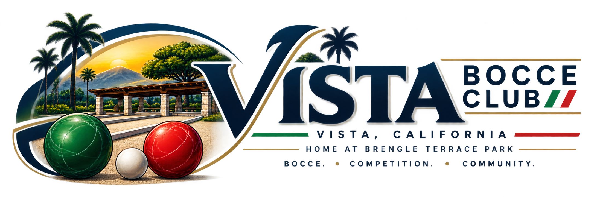
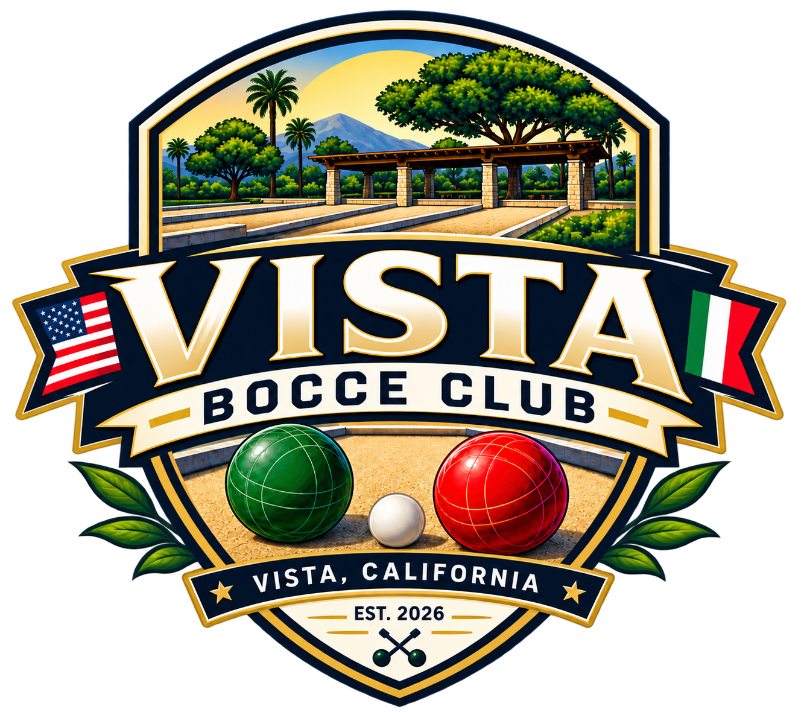

Open Play
Designated club activities that are open to everyone will be clearly labeled. Brengle Terrace's public courts do not require Vista Bocce Club membership.

BRENGLE TERRACE PARK · VISTA, CALIFORNIA
Vista Bocce Club is building a welcoming home for bocce in San Diego County — from first-time players to serious competitors — centered on the four courts at Brengle Terrace Park.

COME PLAY
Membership is open to anyone, and you do not need to live in Vista. Adults, teens, children and families are welcome. Individual events may use age divisions when appropriate.
Regular club play times are being established. Join the interest list and we will share confirmed opportunities as they are published.
Designated club activities that are open to everyone will be clearly labeled. Brengle Terrace's public courts do not require Vista Bocce Club membership.
Formal beginner clinics are planned to cover rules, throwing, scoring, etiquette and basic strategy.
Tournaments are an early priority. Social leagues are planned for a later phase, followed by additional competitive league options as participation grows.
Bring your own bocce set if you have one. Club equipment will be available during appropriate organized activities. Bocce sets may also be available to borrow from the Senior Center at the bottom of the hill, subject to its availability and procedures.
EVENTS
Confirmed Vista Bocce Club activities will appear here first. Regional listings will also be added for relevant Southern California bocce events, with the host organization clearly identified.
Scheduling is underway. The first confirmed open-play opportunities will be published here.
Schedule Being EstablishedA four-court pilot tournament is planned. Date, field size, registration, fees and final event rules will be published before registration opens.
Early PriorityOUR HOME COURTS
The four bocce courts at Brengle Terrace Park are central to Vista's bocce story. Founders and members of the American Italian Club of Vista helped establish the courts and are an important part of their heritage.
Current renovation and improvement work is a City of Vista Parks & Recreation project. Vista Bocce Club represents the next generation of organized play and community growth while honoring the people who helped create the foundation.
Public court note: Vista Bocce Club will show club-controlled activities here. An empty club calendar should not be interpreted as confirmation that a public court is available. City scheduling information will only be shown if a reliable City source becomes available.
VISTA 10/10 BOCCE · PILOT
10 Points. 10 Frames. Every Point Matters.
Vista 10/10 is a tournament format being developed and tested in Vista. It uses USBF Open Bocce rules as the underlying rules of play, while Vista 10/10 defines the game length, tournament flow and event mechanics.
Preliminary play: balanced brackets are preferred so teams play the same number of games; three advancing teams per bracket is the preferred model when practical.
Within-bracket ties: Win-Loss → Head-to-Head → Point Differential → Points For → on-court tiebreak if needed.
Cross-bracket seeding: Win-Loss → Point Differential → Points For → final on-court tiebreak.
Playoffs: seeded single elimination with mathematical byes awarded to the highest seeds when needed.
Operations: master game order, formal On Deck queue and next-available-court flow are designed to keep four courts moving efficiently.
Pilot status: the rules remain a test ruleset until real-world tournament data and player feedback support a formal v1.0 release.
MEMBERSHIP
Public courts remain public. Club membership is not required simply to use a public court when it is otherwise available.
Each activity will be clearly labeled as Open to Everyone, Members Only or a Member Benefit.
Dues and final benefits have not yet been set. The club is developing its bylaws, governance and membership structure before publishing terms.
ABOUT VISTA BOCCE CLUB
Vista Bocce Club exists to bring people together around a game with deep roots, simple beginnings, and a competitive spirit that can last a lifetime.
Our home is the four bocce courts at Brengle Terrace Park in Vista, California. Our community reaches throughout San Diego County, and our vision extends across Southern California.
We are building a place where someone can discover bocce for the first time, experienced players can find meaningful competition, families can spend time together, and the traditions surrounding the game can be passed from one generation to the next.
OUR HISTORY
The story of bocce at Brengle Terrace Park began before Vista Bocce Club.
Founders and members of the American Italian Club of Vista helped establish the four bocce courts at Brengle Terrace, creating an important part of Vista's Italian-American and recreational heritage.
Those courts became a place where a centuries-old game could continue to bring people together here in Vista.
That contribution is part of the identity of bocce at Brengle Terrace, and Vista Bocce Club believes that history should be remembered as the community around the courts grows.
We aren't here to rewrite that history.
We're here to help carry it forward.
Today, the courts remain public recreational facilities within Brengle Terrace Park. Current renovation and improvement work at the courts is being undertaken by the City of Vista Parks & Recreation, and Vista Bocce Club will share confirmed City information while respecting the City's responsibility for the park and its facilities.
The courts belong to the community.
The opportunity now is to build a stronger community around them.
WHY THIS CLUB
Vista Bocce Club began with a connection to bocce that reaches back more than three decades.
That connection started in Northern California, where bocce was more than simply rolling balls down a court. It was competition, conversation, tradition, and community. It was a game where generations could share the same court, where experienced players challenged one another, and where someone picking up a bocce ball for the first time could quickly become part of something larger.
Over the years, that connection grew through competitive play and involvement with established bocce organizations.
But the most important lesson remained remarkably simple:
The strongest bocce communities are built around people.
When the four courts at Brengle Terrace Park became part of that journey, it was easy to see both what already existed and what could come next.
There was history here.
There were four courts surrounded by one of Vista's great community parks.
There was a foundation created by people who cared enough about bocce to establish a permanent place for the game in Vista.
And there was an opportunity to build upon that foundation rather than allow its story to end with the generation that created it.
The vision is to honor the people who helped bring bocce to Brengle Terrace while creating something the next generation can make their own.
A place where a child can learn the game for the first time.
Where families can spend an afternoon together.
Where someone who has never played before can walk onto a court and feel welcome.
Where longtime players can find a community.
And where serious competitors can step onto the courts knowing they are there to compete.
It means teaching the game, creating opportunities to play, building well-run tournaments, and eventually developing leagues, youth programs, adaptive opportunities, and signature events capable of bringing players to Vista from throughout Southern California and beyond.
The goal isn't simply to create another bocce club.
Something that respects where bocce in Vista came from.
Something that strengthens the community around the courts today.
And something that leaves the next generation with an even stronger place to play tomorrow.
That is the reason for Vista Bocce Club.
OUR MISSION
A first-time player should feel just as welcome walking onto a Vista Bocce Club activity as an experienced tournament player.
We want children, teenagers, adults, families, longtime players, and serious competitors to have opportunities to learn, play, compete, volunteer, connect, and keep coming back.
That mission is built around four principles:
OUR HOME
Four courts give Vista something special.
They provide enough space for casual community play, instruction, organized club activities, and meaningful tournament competition—all from the same home.
Vista Bocce Club intends to make the most of that opportunity while recognizing an important distinction:
Brengle Terrace's bocce courts are public courts.
Vista Bocce Club does not own them, and membership in the club is not required simply to use public courts when they are available for public use.
Club activities, organized events, tournaments, clinics, and future member programs are separate from general public access to the park.
That distinction matters because Vista Bocce Club isn't being created to take bocce away from the community.
We're building the club to bring more of the community to bocce.
OUR VISION
The vision starts locally.
Build a strong community around Brengle Terrace. Introduce new people to bocce. Teach the game correctly. Create opportunities to play regularly. Develop tournaments that players want to return to.
Then grow intentionally.
Over time, Vista Bocce Club envisions social and competitive leagues, youth programs, adaptive bocce opportunities, outreach to veterans and military families, community and charitable events, volunteer programs, member benefits, and partnerships that strengthen bocce throughout the region.
Competition will be an important part of that future.
We want Brengle Terrace to become known as a place where serious players can expect organized, challenging, professionally run events while preserving the welcoming atmosphere that makes bocce different from so many other competitive sports.
Eventually, that includes a signature Vista tournament capable of becoming a recognized event on the Southern California bocce calendar.
And the experience shouldn't stop at the edge of the court.
Our longer-term vision includes digital tournament operations, schedules, brackets, results, player history, statistics, media coverage, and eventually live multi-camera broadcasts that allow people to experience Vista bocce whether they're standing beside the courts or watching from somewhere else in the country.
The technology may change. The purpose won't.
Bring people together around the game.
HOW WE GROW
We don't need to build everything at once. We need to build each part well enough that the next part has a strong foundation.
Build awareness around Vista bocce and Brengle Terrace. Create open-play opportunities, welcome new players, offer beginner instruction, develop communication channels, build a volunteer base, and begin hosting quality club activities and events.
Establish repeatable tournament operations and begin attracting players from throughout San Diego County and Southern California. Develop and test Vista 10/10 Bocce, collect real-world tournament data, listen to players, and continue refining the format. Build events people want to play again.
Introduce social leagues and, as participation grows, competitive league opportunities. Develop youth and adaptive programs. Build community partnerships. Expand volunteer opportunities. Establish meaningful membership benefits and additional club programs as the organization matures.
Create signature tournaments. Develop a recognized competitive identity. Expand regional participation. Build richer tournament technology and player history. Produce professional-quality media and live bocce coverage. And help establish Vista as one of the places people think about when they think about bocce in Southern California.
SPONSORS & COMMUNITY SUPPORT
Early sponsorship opportunities will focus on specific events and club needs. As the club grows, the goal is to develop a broader long-term partner program. Any physical signage or use of City property will remain subject to City requirements and approval.
FAQ
No. Brengle Terrace's public courts do not become members-only courts because Vista Bocce Club uses them. Club-organized activities will state whether they are open to everyone or limited to members.
No. All skill levels are welcome, and beginner Learn to Play clinics are part of the club plan.
Not yet. Community play, beginner instruction and early tournaments come first. Social leagues are a future program.
Yes. The club is intended for all ages and families. Individual events may use age divisions or additional safeguards when appropriate.
Not yet. Registration will open only after a specific event date, field size, fee, rules version and registration details are published.
Use the interest form below and select volunteering, sponsorship or another area that interests you.
STAY CONNECTED
Tell us how you would like to participate. We will use this list for confirmed play opportunities, clinics, tournaments, membership information and other club updates as those programs launch.
Email is required. Mobile number is optional and does not enroll you in text messaging; SMS capability may be added later with appropriate consent.